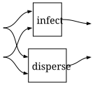
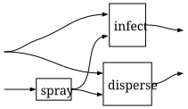
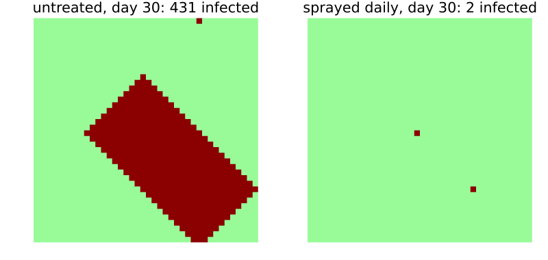

Models from wiring diagrams
Simon Frost
Overview
Because cellular automata over a group form a cartesian category, they can be assembled with wiring diagrams: boxes for automata, wires for layers, with splits where a layer is read twice and dead ends where it is discarded. Catlab.jl writes such diagrams as programs (@program) over a presentation of the boxes (@present). realize evaluates a diagram in the category of cellular automata, and the result is a single automaton that runs on CellularAutomataCore. This vignette rebuilds the host and aphid model of the previous vignette as a diagram, then rewires it to add an intervention.
ENV["GKSwstype"] = "100"
using CategoricalCellularAutomata
using Catlab: Catlab, @present, @program, FreeCartesianCategory, to_graphviz
using CellularAutomataCore: CellularAutomataCore, CAProblem, solve, ReferenceBackend
using PlotsThe boxes
The presentation names the layers (objects) and the updates (morphisms) with their types. It says nothing about what the updates do:
pres = @present HostAphid(FreeCartesianCategory) begin
H::Ob
V::Ob
infect::Hom(H ⊗ V, H)
disperse::Hom(H ⊗ V, V)
spray::Hom(V, V)
endA diagram
The model of the previous vignette updates the host from both layers and the aphids from both layers. As a program, each layer is a variable, and reading a layer twice is just using the variable twice:
model_diagram = @program pres (h::H, v::V) begin
return (infect(h, v), disperse(h, v))
end
to_graphviz(model_diagram; orientation=Catlab.Graphics.LeftToRight)
The diagram copies both input wires, since each layer feeds both boxes.
What the boxes do
The boxes are given as cellular automata over a 40 × 40 torus, the same rules as before: a plant is infected when two or more aphids are on it, and aphids breed on infected plants and spread from crowded cells. The spray halves the aphid density, rounding down.
G = TorusGroup(40, 40)
H = FullShift(FinAlphabet(Int8[0, 1]), G)
V = FullShift(FinAlphabet(Int8[0, 1, 2, 3]), G)
X = otimes(H, V)
infect = CellularAutomaton(G, [(0, 0)], p -> begin
h, v = only(p)
return h == 1 || v >= 2 ? Int8(1) : Int8(0)
end; dom=X, codom=H)
nearest = [(0, 0), (1, 0), (39, 0), (0, 1), (0, 39)]
disperse = CellularAutomaton(G, nearest, p -> begin
p[1][1] == 1 && return Int8(3)
return Int8(max(0, maximum(q[2] for q in p) - 1))
end; dom=X, codom=V)
spray = CellularAutomaton(G, [(0, 0)], p -> Int8(only(p) ÷ 2); dom=V)CellularAutomaton over TorusGroup(40, 40) with memory set [(0, 0)]: Int8[0, 1, 2, 3] → Int8[0, 1, 2, 3]realize evaluates the diagram with these generators. The result is one cellular automaton from H ⊗ V to itself, equal to the pair of the two updates:
model = realize(model_diagram, pres; H, V, infect, disperse, spray)
(model == pair(infect, disperse), memory_set(model))(true, [(0, 0), (1, 0), (39, 0), (0, 1), (0, 39)])Rewiring
To spray the field every day, before the plants and aphids are updated, the aphid wire passes through the spray box first. The change is one line of the program:
sprayed_diagram = @program pres (h::H, v::V) begin
w = spray(v)
return (infect(h, w), disperse(h, w))
end
to_graphviz(sprayed_diagram; orientation=Catlab.Graphics.LeftToRight)
The realised automaton is the composite of the spray, on the aphid layer only, with the model:
sprayed = realize(sprayed_diagram, pres; H, V, infect, disperse, spray)
sprayed == compose(otimes(id(H), spray), model)trueBoth run on CellularAutomataCore, on any backend:
u0 = fill((Int8(0), Int8(0)), 40, 40)
u0[20, 20] = (Int8(1), Int8(0))
u0[10, 30] = (Int8(1), Int8(0))
runs = [solve(CAProblem(m, u0, 30); saveat=10) for m in (model, sprayed)]
(solve(CAProblem(sprayed, u0, 30); backend=ReferenceBackend()).u[end] == runs[2].u[end])trueinfected(u) = count(t -> t[1] == 1, u)
plot(heatmap(first.(runs[1].u[end]); c=[:palegreen, :darkred], clims=(0, 1),
colorbar=false, aspect_ratio=:equal, framestyle=:none,
title="untreated, day 30: $(infected(runs[1].u[end])) infected"),
heatmap(first.(runs[2].u[end]); c=[:palegreen, :darkred], clims=(0, 1),
colorbar=false, aspect_ratio=:equal, framestyle=:none,
title="sprayed daily, day 30: $(infected(runs[2].u[end])) infected");
layout=(1, 2), size=(800, 380))
Spraying halves the density of three on an infected plant to one, below the two needed to infect a neighbour, so the infection never leaves the first two plants.
Mistakes are caught when a diagram is realised
Catlab’s @program does not check that each wire carries the type its port expects. Here the spray, which takes an aphid layer, is given the host layer, and the program is accepted:
miswired = @program pres (h::H, v::V) begin
return (infect(h, v), spray(h))
end;The mistake surfaces when the diagram is turned into an expression of the category, which is the first thing realize does; Catlab stops with an assertion about mismatched ports:
try
realize(miswired, pres; H, V, infect, disperse, spray)
catch err
typeof(err)
endAssertionErrorA correctly wired diagram can still be given the wrong automaton for a box. Here the spray box, whose wire carries aphids, is given an automaton on the host layer, and composing it with the rest of the diagram fails:
host_spray = CellularAutomaton(G, [(0, 0)], only; dom=H)
try
realize(sprayed_diagram, pres; H, V, infect, disperse, spray=host_spray)
catch err
typeof(err)
endDomainMismatchError